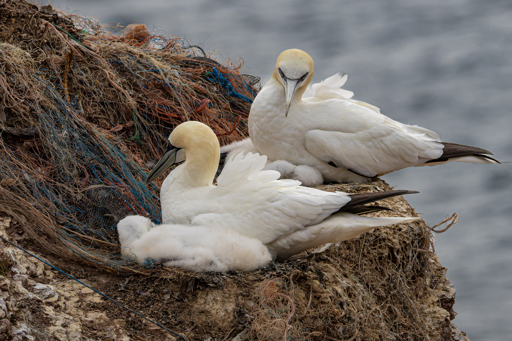

The Nest That Tells the Truth Le nid qui dit la vérité Il nido che dice la verità El nido que dice la verdad Das Nest, das die Wahrheit sagt

A Northern Gannet (Morus bassanus) sits on its nest. The nest should be made of seaweed, grass, feathers — the soft, organic materials that gannets have gathered for millennia on cliff-ledges and rocky islands. This one is made of fishing net.
Not one piece. Not a thread. The entire structure — the cup, the rim, the lining — is synthetic debris pulled from the sea and woven into a shape that the bird's instincts still recognise as "nest," even though the material would not exist in any world that hadn't been industrialised and trawled and discarded into.
The gannet has adapted. That is what animals do. They use what is available. They rebuild with what we leave behind. A gannet does not distinguish between a strip of polypropylene netting and a blade of eelgrass — both are flexible, both are weaveable, both hold the egg in place. The adaptation is real, it is functional, and it is heartbreaking.
The fishing net that forms this nest was once part of an industrial operation that removed the fish from the waters around this colony. The net caught the fish. The net was lost or discarded. The net washed up on the colony. The gannet took it and built with it. The same industry that emptied the sea provided the material for the nest that replaces what the sea no longer gives.
We — photographers, naturalists, viewers — stand in front of this image and we feel something. The image works because it shows adaptation, yes. But it also shows the price. The gannet looks healthy. The nest looks functional. And yet everything in this frame exists in a world that has been fundamentally altered, and the bird is surviving in the ruins of its own ecosystem by repurposing the wreckage.
This is what wildlife photography can do that no statistic can: make the invisible visible. A number passes through the mind. An image of a gannet on a nest of netting stays there. It does not argue. It shows. And showing, as Arteon's manifeste says, is « modestement, recoudre. »
This photograph will not stop ghost fishing. But it does something that data cannot: it makes the viewer see the adaptation as loss. The gannet is not thriving. The gannet is coping. There is a difference, and photography is one of the few tools that can make that difference legible.
Un couple de fous de Bassan et leur poussin sont posés sur leur nid. Le nid devrait être fait d'algues, d'herbes, de plumes — les matériaux organiques souples que les fous collectent depuis des millénaires sur les falaises et les îles rocheuses. Celui-ci est fait de filet de pêche.
Pas un morceau. Pas un fil. Toute la structure — la coupe, le bord, la doublure — est constituée de débris synthétiques tirés de la mer et tissés en une forme que l'instinct de l'oiseau reconnaît encore comme « nid », bien que ce matériau n'existerait dans aucun monde qui n'aurait pas été industrialisé, traqué et pollué.
Le fou s'est adapté. C'est ce que font les animaux. Ils utilisent ce qui est disponible. Ils reconstruisent avec ce que nous laissons derrière nous. Un fou ne distingue pas une lanière de filet en polypropylène d'une lame d'herbe marine — l'une et l'autre sont souples, tressables, et maintiennent l'œuf en place. L'adaptation est réelle, fonctionnelle, et déchirante.
Le filet qui forme ce nid faisait partie d'une opération industrielle qui a retiré les poissons des eaux autour de cette colonie. Le filet a capturé le poisson. Le filet a été perdu ou rejeté. Le filet a échoué sur la colonie. Le fou l'a pris et a construit avec. La même industrie qui a vidé la mer a fourni le matériau du nid qui remplace ce que la mer ne donne plus.
Nous — photographes, naturalistes, spectateurs — nous nous tenons devant cette image et nous ressentons quelque chose. L'image fonctionne parce qu'elle montre l'adaptation, oui. Mais elle montre aussi le prix. Le fou a l'air en bonne santé. Le nid a l'air fonctionnel. Et pourtant tout dans ce cadre existe dans un monde fondamentalement altéré, et l'oiseau survit dans les ruines de son propre écosystème en réutilisant les débris.
C'est ce que la photographie naturaliste peut faire qu'aucune statistique ne peut : rendre visible l'invisible. Un nombre traverse l'esprit. Une image de fou sur un nid de filet y reste. Elle n'argumente pas. Elle montre. Et montrer, comme le dit le manifeste d'Arteon, c'est « modestement, recoudre. »
Cette photographie ne mettra pas fin à la pêche fantôme. Mais elle fait ce que les données ne peuvent pas : elle amène le spectateur à voir l'adaptation comme une perte. Le fou ne prospère pas. Le fou fait face. Il y a une différence, et la photographie est l'un des rares outils qui peut rendre cette différence lisible.
Una sula bassana (Morus bassanus) è posata sul suo nido. Il nido dovrebbe essere fatto di alghe, erba, piume — i materiali organici morbidi che le sule raccolgono da millenni sulle scogliere e le isole rocciose. Questo è fatto di rete da pesca.
Non un pezzo. Non un filo. L'intera struttura — la coppa, il bordo, il rivestimento — è composta da detriti sintetici presi dal mare e intrecciati in una forma che l'istinto dell'uccello riconosce ancora come "nido", anche se quel materiale non esisterebbe in nessun mondo che non fosse stato industrializzato e saccheggiato.
La sula si è adattata. È ciò che fanno gli animali. Usano ciò che è disponibile. Ricostruiscono con ciò che lasciamo indietro. Una sula non distingue una striscia di rete in polipropilene da una foglia di posidonia — entrambe sono flessibili, intrecciabili, tengono l'uovo al suo posto. L'adattamento è reale, funzionale, e spezza il cuore.
La rete che forma questo nido faceva parte di un'operazione industriale che ha rimosso i pesci dalle acque attorno a questa colonia. La rete ha catturato il pesce. La rete è stata persa o scartata. La rete è arrivata alla colonia. La sula l'ha presa e ha costruito. La stessa industria che ha svuotato il mare ha fornito il materiale per il nido che sostituisce ciò che il mare non dà più.
Noi — fotografi, naturalisti, spettatori — ci fermiamo davanti a questa immagine e proviamo qualcosa. L'immagine funziona perché mostra l'adattamento, sì. Ma mostra anche il prezzo. La sula sembra sana. Il nido sembra funzionale. Eppure tutto in questa inquadratura esiste in un mondo fondamentalmente alterato, e l'uccello sopravvive nelle rovine del suo ecosistema riutilizzando i detriti.
È ciò che la fotografia naturalistica può fare e che nessuna statistica può: rendere visibile l'invisibile. Un numero attraversa la mente. Un'immagine di una sula su un nido di rete resta lì. Non argomenta. Mostra. E mostrare, come dice il manifesto di Arteon, è « modestamente, ricucire. »
Questa fotografia non fermerà la pesca fantasma. Ma fa ciò che i dati non possono: porta chi guarda a vedere l'adattamento come perdita. La sula non prospera. La sula si adatta. C'è una differenza, e la fotografia è uno dei pochi strumenti che può renderla leggibile.
Un alcatraz atlántico (Morus bassanus) está posado en su nido. El nido debería estar hecho de algas, hierbas, plumas — los materiales orgánicos suaves que los alcatraces han recogido durante milenios en acantilados e islas rocosas. Este está hecho de red de pesca.
No una pieza. No un hilo. Toda la estructura — la copa, el borde, el revestimiento — está compuesta de desechos sintéticos extraídos del mar y tejidos en una forma que el instinto del ave todavía reconoce como "nido", aunque ese material no existiría en ningún mundo que no hubiera sido industrializado y explotado.
El alcatraz se ha adaptado. Es lo que hacen los animales. Usan lo que está disponible. Reconstruyen con lo que dejamos atrás. Un alcatraz no distingue una tira de red de polipropileno de una hoja de hierba marina — ambas son flexibles, tejibles, mantienen el huevo en su sitio. La adaptación es real, funcional, y desgarradora.
La red que forma este nido formaba parte de una operación industrial que eliminó los peces de las aguas alrededor de esta colonia. La red capturó al pez. La red se perdió o se descartó. La red llegó a la colonia. El alcatraz la tomó y construyó con ella. La misma industria que vació el mar proporcionó el material para el nido que reemplaza lo que el mar ya no da.
Nosotros — fotógrafos, naturalistas, espectadores — nos detenemos ante esta imagen y sentimos algo. La imagen funciona porque muestra la adaptación, sí. Pero también muestra el precio. El alcatraz parece sano. El nido parece funcional. Y sin embargo todo en este encuadre existe en un mundo fundamentalmente alterado, y el ave sobrevive en las ruinas de su propio ecosistema reutilizando los escombros.
Esto es lo que la fotografía de vida silvestre puede hacer y que ninguna estadística puede: hacer visible lo invisible. Un número atraviesa la mente. Una imagen de un alcatraz en un nido de red se queda allí. No argumenta. Muestra. Y mostrar, como dice el manifiesto de Arteon, es « modestamente, recoser. »
Esta fotografía no detendrá la pesca fantasma. Pero hace lo que los datos no pueden: lleva al espectador a ver la adaptación como pérdida. El alcatraz no prospera. El alcatraz se las arregla. Hay una diferencia, y la fotografía es una de las pocas herramientas que puede hacer esa diferencia legible.
Ein Basstölpel (Morus bassanus) sitzt auf seinem Nest. Das Nest sollte aus Seetang, Gras, Federn bestehen — den weichen, organischen Materialien, die Basstölpel seit Jahrtausenden auf Klippen und felsigen Inseln sammeln. Dieses besteht aus Fischernetz.
Nicht ein Stück. Nicht ein Faden. Die gesamte Struktur — die Mulde, der Rand, die Auskleidung — besteht aus synthetischem Abfall, der aus dem Meer gezogen und zu einer Form gewebt wurde, die der Instinkt des Vogels noch als „Nest" erkennt, obwohl dieses Material in keiner Welt existieren würde, die nicht industrialisiert, befischt und verschmutzt worden wäre.
Der Tölpel hat sich angepasst. Das tun Tiere. Sie nutzen, was verfügbar ist. Sie bauen mit dem, was wir hinterlassen. Ein Tölpel unterscheidet nicht zwischen einem Streifen Polypropylennetz und einem Seegrasblatt — beide sind flexibel, beide sind webbar, beide halten das Ei an Ort und Stelle. Die Anpassung ist real, funktional und herzzerreißend.
Das Netz, das dieses Nest bildet, war einst Teil einer industriellen Operation, die die Fische aus den Gewässern um diese Kolonie entfernte. Das Netz fing den Fisch. Das Netz ging verloren oder wurde weggeworfen. Das Netz wurde an die Kolonie gespült. Der Tölpel nahm es und baute damit. Dieselbe Industrie, die das Meer leerte, lieferte das Material für das Nest, das ersetzt, was das Meer nicht mehr gibt.
Wir — Fotografen, Naturforscher, Betrachter — stehen vor diesem Bild und fühlen etwas. Das Bild funktioniert, weil es Anpassung zeigt, ja. Aber es zeigt auch den Preis. Der Tölpel sieht gesund aus. Das Nest sieht funktional aus. Und doch existiert alles in diesem Rahmen in einer Welt, die grundlegend verändert wurde, und der Vogel überlebt in den Ruinen seines eigenen Ökosystems, indem er die Trümmer wiederverwendet.
Das ist es, was Naturfotografie kann, was keine Statistik kann: das Unsichtbare sichtbar machen. Eine Zahl durchquert den Geist. Ein Bild eines Tölpels auf einem Nest aus Netz bleibt. Es argumentiert nicht. Es zeigt. Und zeigen, wie das Manifest von Arteon sagt, ist « bescheiden, wieder vernähen. »
Diese Fotografie wird die Geisterfischerei nicht stoppen. Aber sie tut, was Daten nicht können: sie bringt den Betrachter dazu, die Anpassung als Verlust zu sehen. Der Tölpel gedeiht nicht. Der Tölpel kommt zurecht. Es gibt einen Unterschied, und Fotografie ist eines der wenigen Werkzeuge, die diesen Unterschied lesbar machen können.
Content Credentials: The Infrastructure of Honesty Content Credentials : l'infrastructure de l'honnêteté Content Credentials: l'infrastruttura dell'onestà Content Credentials: la infraestructura de la honestidad Content Credentials: Die Infrastruktur der Ehrlichkeit

A quieter development this week, but one that matters for anyone who photographs the wild and wants the image to be believed.
The C2PA — the coalition behind Content Credentials — announced version 2.3 of their provenance standard in February 2026, with a conformance program designed to make credentials more reliable across the image ecosystem. Adobe's Content Authenticity tools can now inspect and embed provenance metadata across DNG, HEIC, JPEG, PNG, TIFF, AVIF, and WebP.
What this means: an image can now carry a cryptographically signed record of its creation and editing history — camera model, lens, timestamp, edits applied — that travels with the file rather than depending on a platform's willingness to display it.
For wildlife photography, this matters more than it sounds. We live in an era where the question "was this real?" is becoming default. The technology exists. The bottleneck is adoption. Photographers who start embedding Content Credentials now are building the credibility that will matter when the flood of AI-generated nature imagery makes provenance the only differentiator.
If you photograph the wild, sign your work. Not with a watermark. With its history.
Un développement plus discret cette semaine, mais qui compte pour quiconque photographie la nature et veut que l'image soit crue.
La C2PA — la coalition derrière Content Credentials — a annoncé la version 2.3 de son standard de provenance en février 2026, avec un programme de conformité destiné à rendre les credentials plus fiables dans l'écosystème de l'image. Les outils Content Authenticity d'Adobe peuvent désormais inspecter et intégrer les métadonnées de provenance sur DNG, HEIC, JPEG, PNG, TIFF, AVIF et WebP.
Ce que cela signifie : une image peut désormais transporter un enregistrement cryptographiquement signé de son historique de création et d'édition — modèle d'appareil, objectif, horodatage, modifications appliquées — qui voyage avec le fichier plutôt que de dépendre de la volonté d'une plateforme de l'afficher.
Pour la photographie naturaliste, cela compte plus qu'il n'y paraît. Nous vivons à une époque où la question « c'était réel ? » devient par défaut. La technologie existe. Le goulot d'étranglement, c'est l'adoption. Les photographes qui commencent à intégrer Content Credentials maintenant construisent la crédibilité qui comptera quand le déluge d'images naturelles générées par IA fera de la provenance le seul différenciateur.
Si vous photographiez la nature, signez votre travail. Pas avec un filigrane. Avec son histoire.
Uno sviluppo più silenzioso questa settimana, ma che conta per chi fotografa la natura e vuole che l'immagine sia creduta.
La C2PA — la coalizione dietro Content Credentials — ha annunciato la versione 2.3 del suo standard di provenienza a febbraio 2026, con un programma di conformità per rendere le credenziali più affidabili nell'ecosistema delle immagini. Gli strumenti Content Authenticity di Adobe possono ora ispezionare e incorporare metadati di provenienza su DNG, HEIC, JPEG, PNG, TIFF, AVIF e WebP.
Cosa significa: un'immagine può ora trasportare un record crittograficamente firmato della sua storia di creazione e modifica — modello fotocamera, obiettivo, timestamp, modifiche applicate — che viaggia con il file invece di dipendere dalla volontà di una piattaforma di mostrarlo.
Per la fotografia naturalistica, conta più di quanto sembri. Viviamo in un'epoca in cui la domanda "era reale?" sta diventando predefinita. La tecnologia esiste. Il collo di bottiglia è l'adozione. I fotografi che iniziano a incorporare Content Credentials ora stanno costruendo la credibilità che conterà quando l'inondazione di immagini naturali generate dall'IA renderà la provenienza l'unico elemento differenziante.
Se fotografi la natura, firma il tuo lavoro. Non con un watermark. Con la sua storia.
Un desarrollo más discreto esta semana, pero que importa para cualquiera que fotografíe la naturaleza y quiera que se crea la imagen.
La C2PA — la coalición detrás de Content Credentials — anunció la versión 2.3 de su estándar de procedencia en febrero de 2026, con un programa de conformidad diseñado para hacer las credenciales más confiables en el ecosistema de imágenes. Las herramientas Content Authenticity de Adobe ahora pueden inspeccionar e incorporar metadatos de procedencia en DNG, HEIC, JPEG, PNG, TIFF, AVIF y WebP.
Lo que esto significa: una imagen ahora puede llevar un registro criptográficamente firmado de su historial de creación y edición — modelo de cámara, objetivo, marca de tiempo, ediciones aplicadas — que viaja con el archivo en lugar de depender de la voluntad de una plataforma para mostrarlo.
Para la fotografía de vida silvestre, esto importa más de lo que parece. Vivimos en una era donde la pregunta "¿esto fue real?" se está volviendo predeterminada. La tecnología existe. El cuello de botella es la adopción. Los fotógrafos que empiezan a incorporar Content Credentials ahora están construyendo la credibilidad que importará cuando la inundación de imágenes naturales generadas por IA haga de la procedencia el único diferenciador.
Si fotografías la naturaleza, firma tu trabajo. No con una marca de agua. Con su historia.
Eine leisere Entwicklung dieser Woche, die aber für jeden zählt, der Wildnis fotografiert und will, dass das Bild geglaubt wird.
Die C2PA — die Koalition hinter Content Credentials — kündigte im Februar 2026 Version 2.3 ihres Provenienzstandards an, mit einem Konformitätsprogramm, das Credentials im Bild-Ökosystem zuverlässiger machen soll. Adobes Content Authenticity Tools können jetzt Provenienz-Metadaten über DNG, HEIC, JPEG, PNG, TIFF, AVIF und WebP prüfen und einbetten.
Was das bedeutet: Ein Bild kann jetzt einen kryptografisch signierten Datensatz seiner Entstehungs- und Bearbeitungshistorie tragen — Kameramodell, Objektiv, Zeitstempel, angewendete Bearbeitungen — der mit der Datei reist, anstatt von der Bereitschaft einer Plattform abzuhängen, ihn anzuzeigen.
Für Naturfotografie zählt das mehr, als es klingt. Wir leben in einer Ära, in der die Frage „War das echt?" zur Voreinstellung wird. Die Technologie existiert. Der Engpass ist die Akzeptanz. Fotografen, die jetzt anfangen, Content Credentials einzubetten, bauen die Glaubwürdigkeit auf, die zählen wird, wenn die Flut von KI-generierten Naturbildern Provenienz zum einzigen Unterscheidungsmerkmal macht.
Wenn Sie Natur fotografieren, signieren Sie Ihre Arbeit. Nicht mit einem Wasserzeichen. Mit ihrer Geschichte.
When the Camera Listens: Photography as Ecological Sensor Quand l'appareil écoute : la photographie comme capteur écologique Quando la fotocamera ascolta: la fotografia come sensore ecologico Cuando la cámara escucha: la fotografía como sensor ecológico Wenn die Kamera zuhört: Fotografie als ökologischer Sensor

There is a shift happening in conservation biology that wildlife photographers should know about, because it changes what a photograph is for.
For most of its history, wildlife photography has been understood as a visual art: the image is the deliverable, the print is the endpoint. But a growing body of work in ecological monitoring is treating the camera — and increasingly, the microphone — as a sensor: a field instrument that records biological data continuously, without a human behind it.
Camera traps have been used this way for decades. What is new is the scale and the intelligence applied to the output. Networks of motion-triggered cameras now cover reserves, migration corridors, and restored habitats — not to produce beautiful images, but to estimate population density, detect invasive species, and measure the rate at which a recovering ecosystem repopulates. The photographs are data points. AI models trained on millions of camera-trap images can identify species, count individuals, and flag behavioural anomalies faster than any human reviewer.
The same logic is now extending to sound. Passive acoustic monitoring — deploying autonomous recorders in forests, wetlands, and marine environments — captures the acoustic signature of an ecosystem over weeks or months. BirdNET, developed at the Cornell Lab of Ornithology, can identify bird species from audio in real time. Similar models are being trained for bats, frogs, and insects. The sound of a healthy forest at dawn is not just beautiful. It is a census.
What this means for photographers: the boundary between "making images" and "producing ecological knowledge" is dissolving. A well-placed trail camera does not replace a photographer — no algorithm composes with intent, reads light for emotional weight, or chooses the moment that tells a story a human needs to hear. But the photographer who understands that their camera is also a sensing instrument is operating in a richer territory than the one who chases only the frame.
The gannet photograph in this edition is a portrait. It is also evidence. The photograph does not stop being art. But it becomes more than art — it becomes an instrument.
This is the territory WildLens will explore: photography not as an end, but as a node in a network of seeing, listening, and understanding what is happening to the wild.
Un changement est en cours en biologie de la conservation que les photographes naturalistes devraient connaître, car il modifie ce qu'une photographie est destinée à être.
Pendant la plus grande partie de son histoire, la photographie naturaliste a été comprise comme un art visuel : l'image est le livrable, le tirage est le point final. Mais un corpus croissant de travaux en surveillance écologique traite l'appareil photo — et de plus en plus le microphone — comme un capteur : un instrument de terrain qui enregistre des données biologiques en continu, sans humain derrière.
Les pièges photographiques sont utilisés ainsi depuis des décennies. Ce qui est nouveau, c'est l'échelle et l'intelligence appliquées aux résultats. Des réseaux de caméras à déclenchement automatique couvrent désormais des réserves, des couloirs de migration et des habitats restaurés — non pour produire de belles images, mais pour estimer la densité de population, détecter les espèces invasives et mesurer le rythme auquel un écosystème en récupération se repeuple. Les photographies sont des points de données. Des modèles d'IA entraînés sur des millions d'images de pièges photo peuvent identifier les espèces, compter les individus et signaler des anomalies comportementales plus rapidement que n'importe quel examinateur humain.
La même logique s'étend maintenant au son. Le suivi acoustique passif — déploiement d'enregistreurs autonomes dans les forêts, les zones humides et les environnements marins — capture la signature acoustique d'un écosystème sur des semaines ou des mois. BirdNET, développé au Cornell Lab of Ornithology, peut identifier les espèces d'oiseaux à partir de l'audio en temps réel. Des modèles similaires sont entraînés pour les chauves-souris, les grenouilles et les insectes. Le son d'une forêt saine à l'aube n'est pas seulement beau. C'est un recensement.
Ce que cela signifie pour les photographes : la frontière entre « faire des images » et « produire des connaissances écologiques » se dissout. Un piège photo bien placé ne remplace pas un photographe — aucun algorithme ne compose avec intention, ne lit la lumière pour son poids émotionnel, ne choisit le moment qui raconte une histoire qu'un humain a besoin d'entendre. Mais le photographe qui comprend que son appareil est aussi un capteur évolue dans un territoire plus riche que celui qui ne poursuit que le cadre.
La photographie du fou de Bassan dans cette édition est un portrait. C'est aussi une preuve. La photographie ne cesse pas d'être de l'art. Mais elle devient plus que de l'art — elle devient un instrument.
C'est le territoire que WildLens explorera : la photographie non comme une fin, mais comme un nœud dans un réseau de voir, d'écouter et de comprendre ce qui arrive au vivant.
C'è un cambiamento in corso nella biologia della conservazione che i fotografi naturalisti dovrebbero conoscere, perché cambia ciò per cui una fotografia è fatta.
Per gran parte della sua storia, la fotografia naturalistica è stata intesa come arte visiva: l'immagine è il prodotto, la stampa è il punto finale. Ma un corpo crescente di lavori nel monitoraggio ecologico tratta la fotocamera — e sempre più il microfono — come un sensore: uno strumento da campo che registra dati biologici continuamente, senza un essere umano dietro.
Le fototrappole sono usate così da decenni. Ciò che è nuovo è la scala e l'intelligenza applicata ai risultati. Reti di fotocamere attivate dal movimento coprono ora riserve, corridoi di migrazione e habitat ripristinati — non per produrre belle immagini, ma per stimare la densità di popolazione, rilevare specie invasive e misurare il ritmo di ripopolamento di un ecosistema in recupero. Le fotografie sono punti dati. Modelli di IA addestrati su milioni di immagini di fototrappole possono identificare specie, contare individui e segnalare anomalie comportamentali più velocemente di qualsiasi revisore umano.
La stessa logica si sta ora estendendo al suono. Il monitoraggio acustico passivo — deploy di registratori autonomi in foreste, zone umide e ambienti marini — cattura la firma acustica di un ecosistema per settimane o mesi. BirdNET, sviluppato al Cornell Lab of Ornithology, può identificare specie di uccelli dall'audio in tempo reale. Modelli simili sono in fase di addestramento per pipistrelli, rane e insetti. Il suono di una foresta sana all'alba non è solo bello. È un censimento.
Cosa significa per i fotografi: il confine tra "fare immagini" e "produrre conoscenza ecologica" si sta dissolvendo. Una fototrappola ben posizionata non sostituisce un fotografo — nessun algoritmo compone con intenzione, legge la luce per il peso emotivo, sceglie il momento che racconta una storia che un essere umano ha bisogno di sentire. Ma il fotografo che comprende che la sua fotocamera è anche un sensore opera in un territorio più ricco di chi insegue solo lo scatto.
La fotografia della sula in questa edizione è un ritratto. È anche una prova. La fotografia non cessa di essere arte. Ma diventa più dell'arte — diventa uno strumento.
Questo è il territorio che WildLens esplorerà: la fotografia non come fine, ma come nodo in una rete di vedere, ascoltare e comprendere ciò che sta accadendo alla natura selvaggia.
Hay un cambio ocurriendo en la biología de la conservación que los fotógrafos de vida silvestre deberían conocer, porque cambia para qué sirve una fotografía.
Durante la mayor parte de su historia, la fotografía de vida silvestre se ha entendido como arte visual: la imagen es el producto, la impresión es el punto final. Pero un cuerpo creciente de trabajo en monitoreo ecológico trata la cámara — y cada vez más el micrófono — como un sensor: un instrumento de campo que registra datos biológicos continuamente, sin un humano detrás.
Las cámaras trampa se han usado así durante décadas. Lo nuevo es la escala y la inteligencia aplicada a los resultados. Redes de cámaras activadas por movimiento cubren ahora reservas, corredores de migración y hábitats restaurados — no para producir imágenes hermosas, sino para estimar la densidad de población, detectar especies invasivas y medir el ritmo al que un ecosistema en recuperación se repuebla. Las fotografías son puntos de datos. Modelos de IA entrenados con millones de imágenes de cámaras trampa pueden identificar especies, contar individuos y señalar anomalías de comportamiento más rápido que cualquier revisor humano.
La misma lógica se extiende ahora al sonido. El monitoreo acústico pasivo — despliegue de grabadoras autónomas en bosques, humedales y entornos marinos — captura la firma acústica de un ecosistema durante semanas o meses. BirdNET, desarrollado en el Cornell Lab of Ornithology, puede identificar especies de aves a partir del audio en tiempo real. Modelos similares se están entrenando para murciélagos, ranas e insectos. El sonido de un bosque sano al amanecer no es solo hermoso. Es un censo.
Lo que esto significa para los fotógrafos: la frontera entre "hacer imágenes" y "producir conocimiento ecológico" se está disolviendo. Una cámara trampa bien colocada no reemplaza a un fotógrafo — ningún algoritmo compone con intención, lee la luz por su peso emocional, o elige el momento que cuenta una historia que un humano necesita escuchar. Pero el fotógrafo que comprende que su cámara es también un sensor opera en un territorio más rico que el que solo persigue la foto.
La fotografía del alcatraz en esta edición es un retrato. También es evidencia. La fotografía no deja de ser arte. Pero se convierte en más que arte — se convierte en un instrumento.
Este es el territorio que WildLens explorará: la fotografía no como un fin, sino como un nodo en una red de ver, escuchar y comprender lo que le está pasando a la vida silvestre.
Es vollzieht sich ein Wandel in der Naturschutzbiologie, den Naturfotografen kennen sollten, weil er verändert, wofür eine Fotografie da ist.
Den größten Teil ihrer Geschichte wurde Naturfotografie als visuelle Kunst verstanden: das Bild ist das Endprodukt, der Abzug ist der Endpunkt. Aber eine wachsende Reihe von Arbeiten im ökologischen Monitoring behandelt die Kamera — und zunehmend das Mikrofon — als Sensor: ein Feldinstrument, das kontinuierlich biologische Daten aufzeichnet, ohne einen Menschen dahinter.
Kamerafallen werden seit Jahrzehnten so eingesetzt. Was neu ist, ist das Maß und die Intelligenz, die auf die Ergebnisse angewendet wird. Netzwerke bewegungsausgelöster Kameras decken jetzt Reservate, Migrationskorridore und wiederhergestellte Lebensräume ab — nicht um schöne Bilder zu produzieren, sondern um Populationsdichte zu schätzen, invasive Arten zu erkennen und das Tempo zu messen, in dem sich ein sich erholendes Ökosystem wieder besiedelt. Die Fotografien sind Datenpunkte. KI-Modelle, die auf Millionen von Kamerafallbildern trainiert sind, können Arten identifizieren, Individuen zählen und Verhaltensanomalien schneller kennzeichnen als jeder menschliche Prüfer.
Die gleiche Logik erstreckt sich jetzt auf den Klang. Passives akustisches Monitoring — der Einsatz autonomer Rekorder in Wäldern, Feuchtgebieten und Meeresumgebungen — erfasst die akustische Signatur eines Ökosystems über Wochen oder Monate. BirdNET, entwickelt am Cornell Lab of Ornithology, kann Vogelarten aus Audio in Echtzeit identifizieren. Ähnliche Modelle werden für Fledermäuse, Frösche und Insekte trainiert. Der Klang eines gesunden Waldes bei Sonnenaufgang ist nicht nur schön. Er ist eine Volkszählung.
Was das für Fotografen bedeutet: die Grenze zwischen „Bilder machen" und „ökologisches Wissen produzieren" löst sich auf. Eine gut platzierte Kamerafalle ersetzt keinen Fotografen — kein Algorithmus komponiert mit Absicht, liest Licht für emotionales Gewicht, oder wählt den Moment, der eine Geschichte erzählt, die ein Mensch hören muss. Aber der Fotograf, der versteht, dass seine Kamera auch ein Sensor ist, bewegt sich in einem reicheren Gebiet als der, der nur den Rahmen jagt.
Die Tölpel-Fotografie in dieser Ausgabe ist ein Porträt. Sie ist auch ein Beweis. Die Fotografie hört nicht auf, Kunst zu sein. Aber sie wird mehr als Kunst — sie wird ein Instrument.
Dies ist das Gebiet, das WildLens erkunden wird: Fotografie nicht als Zweck, sondern als Knotenpunkt in einem Netzwerk des Sehens, Zuhörens und Verstehens, was mit der Wildnis geschieht.
Get your photo analysed by an expert Faites analyser votre photo par un expert Fai analizzare la tua foto da un esperto Haz que un experto analice tu foto Lassen Sie Ihr Foto von einem Experten analysieren
L'Instant Lu — AI-powered wildlife photography critique. €1.90 per analysis. First one free. L'Instant Lu — critique photo IA. 1,90 € l'analyse. La première est gratuite. L'Instant Lu — critica fotografica IA. 1,90 € ad analisi. La prima è gratuita. L'Instant Lu — crítica fotográfica con IA. 1,90 € por análisis. La primera es gratuita. L'Instant Lu — KI-gestützte Fotokritik. 1,90 € pro Analyse. Die erste ist kostenlos.
Try L'Instant Lu → Essayer L'Instant Lu → Prova L'Instant Lu → Probar L'Instant Lu → L'Instant Lu testen →